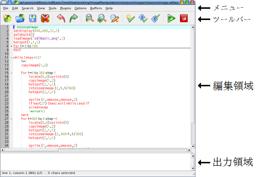

インタフェース
さて、 sdlBasic にはインタプリタに加えて専用エディタがあります。もちろん、お望みであれば使い慣れたテキストエディタを使い続けるも可能です。sdlBasic 専用エディタ (Linux 版はsdlBasic, Windows 版は sdlBasic.exe ) は非常に有名な SciTE テキストエディタ ( http://scintilla.sourceforge.net/ ) の派生製品であり、その強力な機能の大部分を共有しています。 SciTe を選んだ理由は:
- SciTe テキストエディタにはテキストの折り畳み、構文強調表示など……の数多くの実用的な機能があります。
- sdlBasic と同じ対応プラットフォームで動作します。
- ソースの変更が可能であり自由に配布できるフリーソフトウェアです。
こちらにある以下のイメージは sdlBasic 専用エディタの作業画面です。

画面構成は、
- メニューはコマンド全般から目的のコマンドを探すため使います。
- ツールバーは一般に多用されるショートカットをすぐに使えます。
- 編集領域には sdlBasic プログラムを記述します。
- 出力領域にはエラーメッセージなどのコンソール出力に関する取得と表示をします。